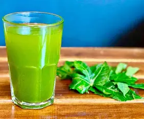

Descripcion
El agua de chaya es una bebida tradicional de Yucatan, conocida por ser refrescante y nutritiva. Se elabora con hojas de chaya, agua y limon, y es muy consumida en la region por sus beneficios para la salud.
La chaya es considerada una planta muy importante en la cultura maya por sus propiedades nutritivas.
Ingredientes
| Ingrediente | Cantidad |
|---|---|
| Hojas de chaya | 5 hojas |
| Agua | 1 litro |
| Jugo de limon | Al gusto |
| Azucar | Al gusto |
| Hielo | Opcional |
Preparacion
- Lavar bien las hojas de chaya.
- Hervir las hojas en agua durante unos minutos.
- Dejar enfriar la preparacion.
- Licuar las hojas con el agua.
- Colar la mezcla para obtener la bebida.
- Agregar jugo de limon y azucar al gusto.
- Servir fria con hielo.
Consejos
Es importante hervir la chaya antes de consumirla, ya que cruda puede ser toxica.
Se recomienda tomarla bien fria para disfrutar mejor su sabor.